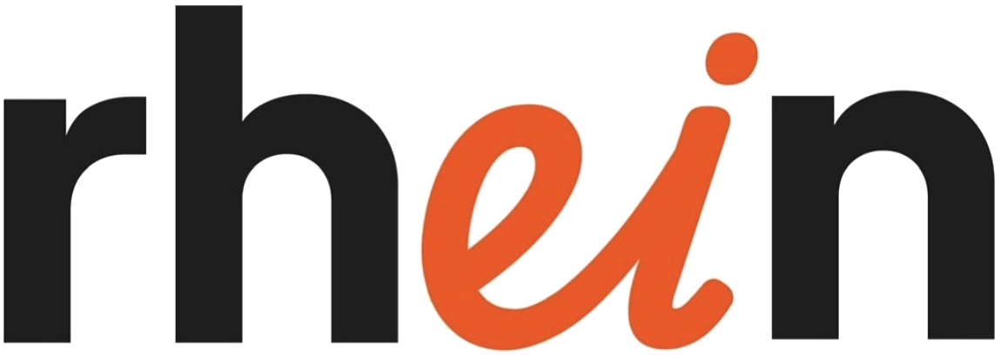

Roteiro pessoal de Amanda — digite o código de acesso.
Código incorreto. Tente novamente.
Do embarque em São Paulo até a volta pra casa — cada trecho, hospedagem e passeio já organizados pra você só aproveitar.